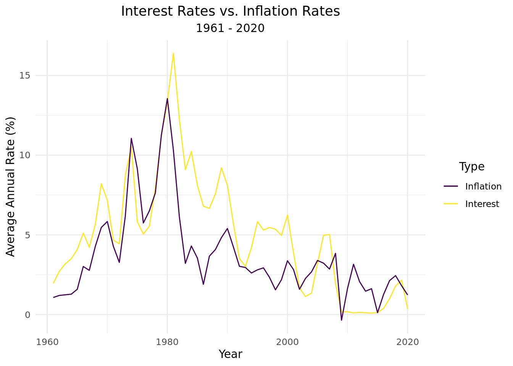
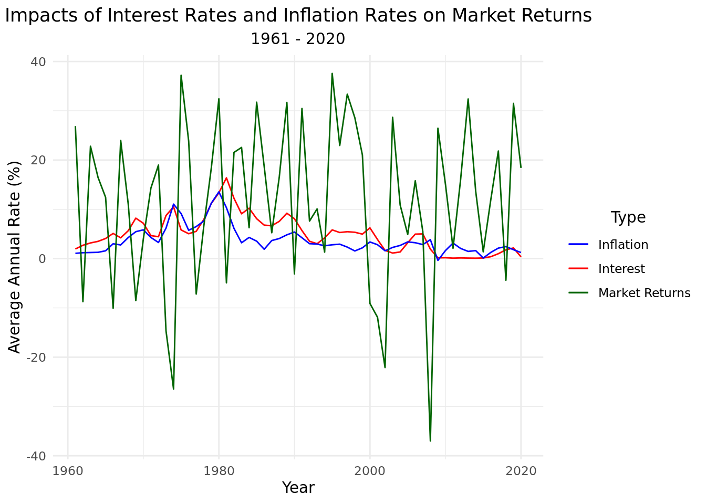

#|: loading-packages
library(tidyverse)
library(tidymodels)The Impacts of Inflation and Interest Rates on the Stock Market
Report
Introduction
We want to explore the relationship between interest and inflation rates and the performance of the stock market. In doing so, we hope to determine economic characteristics in which it’s beneficial to invest in the stock market, as well as if/when certain companies or sectors perform better in different economic climates. Therefore, we are interested in answering the following questions:
How have these rates (inflation and interest) historically impacted the returns of the stock market?
How closely has the current performance of the market (the past two years) followed these historical trends?
And finally, does the current high-rate economic climate disproportionately affect some companies/sectors more than others? If so, why?
Hypotheses: We believe the overall stock market would be hurt by high inflation and corresponding high interest rates, both because consumers’ discretionary incomes drop and because companies are disincentivized from borrowing, due to the higher costs associated with taking out a loan. We expect to see this relationship in both our historical analysis and our current-day analysis. Conversely, in times of lower rates, we expect market returns to be higher, on average. Though we expect the stock market as a whole to suffer from high rates, we believe certain sectors of the economy could serve as silver linings for investors’ pockets; these industries include: financials, health care, utilities, and consumer staples. We believe these sectors could perform better than the aggregate market because they sell essential goods that consumers must purchase no matter the state of the economy (health care, utilities, and consumer staples). Also, we believe the financials sector will do well because banks are able to charge higher interest rates on their loans (and thus earn greater profits) when interest rates are high.
Note: We are using the S&P 500 as a model of the performance of the entire market, and we are using the federal-funds rate, the interest rate set by the Federal Reserve, to model the general trend of all interest rates. We believed these are logical assumptions, as the S&P 500 includes the 500 largest US-based companies (and thus covers a large portion of the total market) and the federal-funds rate generally serves as a benchmark for all other interest rates. Also, all of our observations feature the performance of the market (S&P 500) or an individual company in the S&P 500 on a specific day/month/year.
Part 1: Historical Analysis
Sources:
Federal Funds Rate and Inflation Rate: Macrotrends (https://www.macrotrends.net/2015/fed-funds-rate-historical-chart)
S&P 500 Annual Returns: Slickcharts (https://www.slickcharts.com/sp500/returns)
Monthly Statistics (scraped): Official Data (https://www.officialdata.org/us/stocks/s-p-500/1900).
All of these sites collected these data by retrieving the data published publicly on stock exchanges, except for the federal-funds rate–this data was collected from the World Bank. In addition, each of these sites updates their data monthly/yearly (although they could update it daily, as they are collecting live data). Each observation represents a month in a year (between 1961 and 2020) and includes the following variables:
| Variable | Definition |
|---|---|
| year | year in which observation was recorded |
| month | month in which observation was recorded |
| monthly_return | total stock market’s monthly return |
| year_to_date_return | S&P 500’s yearly return |
| mean_fed_funds_rate | mean annual interest rate set by the Federal Reserve |
| inflation rate | mean annual inflation rate |
| decade | represents decade in which observation was made |
| time_period | categorizes observation as “recent” or “not so recent,” with years after 1990 classified as recent |
#|: loading-historical-data
historical_data <- read_csv("data/historical_data.csv")
glimpse(historical_data)Rows: 720
Columns: 7
$ year <dbl> 1961, 1961, 1961, 1961, 1961, 1961, 1961, 1961…
$ inflation_rate <dbl> 1.0707, 1.0707, 1.0707, 1.0707, 1.0707, 1.0707…
$ inflation_annual_change <dbl> -0.39, -0.39, -0.39, -0.39, -0.39, -0.39, -0.3…
$ mean_fed_funds_rate <dbl> 1.95, 1.95, 1.95, 1.95, 1.95, 1.95, 1.95, 1.95…
$ year_to_date_return <dbl> 26.89, 26.89, 26.89, 26.89, 26.89, 26.89, 26.8…
$ time_period <chr> "not so recent", "not so recent", "not so rece…
$ decade <chr> "'60s", "'60s", "'60s", "'60s", "'60s", "'60s"…#|: inflation-vs-interest-plot
# Completed with assistance from: https://community.rstudio.com/t/adding-manual-legend-to-ggplot2/41651/5
colors <- c("Inflation" = "blue", "Interest" = "red")
ggplot(historical_data) +
geom_line(aes(x = year, y = mean_fed_funds_rate, color = "Interest")) +
geom_line(aes(x = year, y = inflation_rate, color = "Inflation")) +
theme_minimal() +
labs(
title = "Interest Rates vs. Inflation Rates",
subtitle = "1961 - 2020",
x = "Year",
y = "Average Annual Rate (%)",
color = "Type"
) +
theme(
plot.title = element_text(hjust = 0.5),
plot.subtitle = element_text(hjust = 0.5),
legend.title = element_text(hjust = 0.5)
) +
scale_color_manual(values = colors)
#|: interest-inflation-and-market-returns-graph
colors_redux <- c("Inflation" = "blue", "Interest" = "red", "Market Returns" = "dark green")
historical_data |>
ggplot() +
geom_line(aes(x = year, y = mean_fed_funds_rate, color = "Interest")) +
geom_line(aes(x = year, y = inflation_rate, color = "Inflation")) +
geom_line(aes(x = year, y = year_to_date_return, color = "Market Returns")) +
theme_minimal() +
labs(
title = "Impacts of Interest Rates and Inflation Rates on Market Returns",
subtitle = "1961 - 2020",
x = "Year",
y = "Average Annual Rate (%)",
color = "Type"
) +
theme(
plot.title = element_text(hjust = 0.5),
plot.subtitle = element_text(hjust = 0.5),
legend.title = element_text(hjust = 0.5)
) +
scale_color_manual(values = colors_redux)
#|: functions-for-finding-min-and-max-years-of-criteria-by-time-period
findMax <- function(sort_by_criteria, num_years, time_period_category) {
filter(time_period == time_period_category) |>
distinct(year, mean_fed_funds_rate, inflation_rate, year_to_date_return) |>
arrange(desc(sort_by_criteria)) |>
slice_head(n = num_years) |>
relocate(year, sort_by_criteria)
}
findMin <- function(df, sort_by_criteria, num_years, time_period_category) {
df |>
distinct(df$year, df$mean_fed_funds_rate, df$inflation_rate, df$year_to_date_return) |>
arrange(df$sort_by_criteria) |>
slice_head(n = as.numeric(num_years)) |>
relocate(df$year, sort_by_criteria)
}#|: top-ten-years-of-highest-interest-by-time-period
historical_data |>
filter(time_period == "not so recent") |>
distinct(year, mean_fed_funds_rate, inflation_rate, year_to_date_return) |>
arrange(desc(mean_fed_funds_rate)) |>
slice_head(n = 10) |>
relocate(year, mean_fed_funds_rate)# A tibble: 10 × 4
year mean_fed_funds_rate inflation_rate year_to_date_return
<dbl> <dbl> <dbl> <dbl>
1 1981 16.4 10.3 -4.91
2 1980 13.4 13.5 32.4
3 1982 12.2 6.13 21.6
4 1979 11.2 11.3 18.4
5 1974 10.5 11.1 -26.5
6 1984 10.2 4.30 6.27
7 1989 9.21 4.83 31.7
8 1983 9.09 3.21 22.6
9 1973 8.74 6.18 -14.7
10 1969 8.21 5.46 -8.5 historical_data |>
filter(time_period == "recent") |>
distinct(year, mean_fed_funds_rate, inflation_rate, year_to_date_return) |>
arrange(desc(mean_fed_funds_rate)) |>
slice_head(n = 10) |>
relocate(year, mean_fed_funds_rate)# A tibble: 10 × 4
year mean_fed_funds_rate inflation_rate year_to_date_return
<dbl> <dbl> <dbl> <dbl>
1 2000 6.24 3.38 -9.1
2 1995 5.83 2.81 37.6
3 1991 5.69 4.24 30.5
4 1997 5.46 2.34 33.4
5 1998 5.35 1.55 28.6
6 1996 5.3 2.93 23.0
7 2007 5.02 2.85 5.49
8 1999 4.97 2.19 21.0
9 2006 4.97 3.23 15.8
10 1994 4.21 2.61 1.32#|: top-ten-years-of-highest-inflation-by-time-period
historical_data |>
filter(time_period == "not so recent") |>
distinct(year, mean_fed_funds_rate, inflation_rate, year_to_date_return) |>
arrange(desc(inflation_rate)) |>
slice_head(n = 10)# A tibble: 10 × 4
year inflation_rate mean_fed_funds_rate year_to_date_return
<dbl> <dbl> <dbl> <dbl>
1 1980 13.5 13.4 32.4
2 1979 11.3 11.2 18.4
3 1974 11.1 10.5 -26.5
4 1981 10.3 16.4 -4.91
5 1975 9.14 5.82 37.2
6 1978 7.63 7.94 6.56
7 1977 6.50 5.54 -7.18
8 1973 6.18 8.74 -14.7
9 1982 6.13 12.2 21.6
10 1970 5.84 7.17 4.01historical_data |>
filter(time_period == "recent") |>
distinct(year, mean_fed_funds_rate, inflation_rate, year_to_date_return) |>
arrange(desc(inflation_rate)) |>
slice_head(n = 10)# A tibble: 10 × 4
year inflation_rate mean_fed_funds_rate year_to_date_return
<dbl> <dbl> <dbl> <dbl>
1 1991 4.24 5.69 30.5
2 2008 3.84 1.92 -37
3 2005 3.39 3.22 4.91
4 2000 3.38 6.24 -9.1
5 2006 3.23 4.97 15.8
6 2011 3.16 0.1 2.11
7 1992 3.03 3.52 7.62
8 1993 2.95 3.02 10.1
9 1996 2.93 5.3 23.0
10 2007 2.85 5.02 5.49#|: top-ten-years-of-highest-returns-by-time-period
historical_data |>
filter(time_period == "not so recent") |>
distinct(year, mean_fed_funds_rate, inflation_rate, year_to_date_return) |>
arrange(desc(year_to_date_return)) |>
slice_head(n = 10) |>
relocate(year, year_to_date_return)# A tibble: 10 × 4
year year_to_date_return inflation_rate mean_fed_funds_rate
<dbl> <dbl> <dbl> <dbl>
1 1975 37.2 9.14 5.82
2 1980 32.4 13.5 13.4
3 1985 31.7 3.55 8.1
4 1989 31.7 4.83 9.21
5 1961 26.9 1.07 1.95
6 1967 24.0 2.77 4.22
7 1976 23.8 5.74 5.05
8 1963 22.8 1.24 3.18
9 1983 22.6 3.21 9.09
10 1982 21.6 6.13 12.2 historical_data |>
filter(time_period == "recent") |>
distinct(year, mean_fed_funds_rate, inflation_rate, year_to_date_return) |>
arrange(desc(year_to_date_return)) |>
slice_head(n = 10) |>
relocate(year, year_to_date_return)# A tibble: 10 × 4
year year_to_date_return inflation_rate mean_fed_funds_rate
<dbl> <dbl> <dbl> <dbl>
1 1995 37.6 2.81 5.83
2 1997 33.4 2.34 5.46
3 2013 32.4 1.46 0.11
4 2019 31.5 1.81 2.16
5 1991 30.5 4.24 5.69
6 2003 28.7 2.27 1.13
7 1998 28.6 1.55 5.35
8 2009 26.5 -0.356 0.16
9 1996 23.0 2.93 5.3
10 2017 21.8 2.13 1 #|: worst-ten-years-of-highest-interest-by-time-period
historical_data |>
filter(time_period == "not so recent") |>
distinct(year, mean_fed_funds_rate, inflation_rate, year_to_date_return) |>
arrange(mean_fed_funds_rate) |>
slice_head(n = 10) |>
relocate(year, mean_fed_funds_rate)# A tibble: 10 × 4
year mean_fed_funds_rate inflation_rate year_to_date_return
<dbl> <dbl> <dbl> <dbl>
1 1961 1.95 1.07 26.9
2 1962 2.71 1.20 -8.73
3 1963 3.18 1.24 22.8
4 1964 3.5 1.28 16.5
5 1965 4.08 1.59 12.4
6 1967 4.22 2.77 24.0
7 1972 4.44 3.27 19.0
8 1971 4.67 4.29 14.3
9 1976 5.05 5.74 23.8
10 1966 5.11 3.02 -10.1 historical_data |>
filter(time_period == "recent") |>
distinct(year, mean_fed_funds_rate, inflation_rate, year_to_date_return) |>
arrange(mean_fed_funds_rate) |>
slice_head(n = 10) |>
relocate(year, mean_fed_funds_rate)# A tibble: 10 × 4
year mean_fed_funds_rate inflation_rate year_to_date_return
<dbl> <dbl> <dbl> <dbl>
1 2014 0.09 1.62 13.7
2 2011 0.1 3.16 2.11
3 2013 0.11 1.46 32.4
4 2015 0.13 0.119 1.38
5 2012 0.14 2.07 16
6 2009 0.16 -0.356 26.5
7 2010 0.18 1.64 15.1
8 2020 0.36 1.23 18.4
9 2016 0.39 1.26 12.0
10 2017 1 2.13 21.8 historical_data |>
filter(time_period == "recent") |>
distinct(year, mean_fed_funds_rate, inflation_rate, year_to_date_return) |>
arrange(mean_fed_funds_rate) |>
slice_head(n = 10) |>
relocate(year, mean_fed_funds_rate) |>
summarize(mean_return = mean(year_to_date_return))# A tibble: 1 × 1
mean_return
<dbl>
1 15.9Results:
Part 2: Current-day Analysis
Source:
- Investing.com (https://www.investing.com/indices/us-spx-500-historical-data)
Investing.com gets their data from financial-data providers, including stock exchanges and/or directly from market makers (who set stock prices to match supply and demand). The data is collected in real time by monitoring transactions (selling, buying, etc.) executed in the stock market, which correspond to increases/decreases in prices. Each observation represents a different day (between 1 October 2020 and 28 October 2022) and includes the following variables:
| Variable | Definition |
|---|---|
| date | day on which observation was recorded |
| price | closing daily price for the S&P 500 |
| open | opening daily price for the S&P 500 |
| daily_percent_change | daily percentage difference between opening and closing prices |
| daily_diff | daily numerical difference between opening and closing prices |
| gain | TRUE if daily_diff > 0 (positive return for the day), else FALSE |
#|: loading-current-day-market-data
sp500_curr <- read_csv("data/sp500_curr_updated.csv")
glimpse(sp500_curr)Rows: 524
Columns: 9
$ Date <chr> "10/28/2022", "10/27/2022", "10/26/2022", "10/25/…
$ Price <dbl> 3901.06, 3807.30, 3830.60, 3859.11, 3797.34, 3752…
$ Open <dbl> 3808.26, 3834.69, 3825.97, 3799.44, 3762.01, 3657…
$ High <dbl> 3905.42, 3859.95, 3886.15, 3862.85, 3810.74, 3757…
$ Low <dbl> 3808.26, 3803.79, 3824.07, 3799.44, 3741.65, 3647…
$ daily_percent_change <dbl> 2.4368084, -0.7142690, 0.1210151, 1.5704946, 0.93…
$ daily_diff <dbl> 92.80, -27.39, 4.63, 59.67, 35.33, 95.65, -23.27,…
$ high_minus_low <dbl> 97.16, 56.16, 62.08, 63.41, 69.09, 110.47, 79.56,…
$ gain <lgl> TRUE, FALSE, TRUE, TRUE, TRUE, TRUE, FALSE, FALSE…Results:
Part 3: Company/Sector Analysis
Sources:
Name, Symbol, and Sector: DATA HUB (https://datahub.io/core/s-and-p-500-companies-financials#resource-constituents)
Weights (scraped): Slickcharts (https://www.slickcharts.com/sp500)
Prices and Returns (scraped): Slickcharts (https://www.slickcharts.com/sp500/performance)
DATA HUB collected their data from S&P Dow Jones Indices (which, in turn, is collected daily from stock exchanges), and Slickcharts their data directly from the stock exchange. Each observation represents a different company and includes the following variables:
| Variable | Definition |
|---|---|
| name | name of company in S&P 500 |
| symbol | ticker symbol used to identify companies on stock exchange |
| weight | percentage weighting of company in S&P 500 |
| original_price | price of company’s stock at beginning of 2022 |
| current_price | price of company’s stock as of October 2022 |
| ytd_return_num | company’s year-to-date return percentage |
| sector | company’s industry |
| return_category | positive if ytd_return_num > 0 (positive return for the year), else negative |
#|: loading-current-day-company-and-sector-data
sp500_curr_company_and_sector <- read_csv("data/sp500_by_company_and_sector.csv")
glimpse(sp500_curr_company_and_sector)Rows: 503
Columns: 8
$ name <chr> "Apple", "Microsoft", "Amazon", "Alphabet (Class A)", …
$ symbol <chr> "AAPL", "MSFT", "AMZN", "GOOGL", "TSLA", "GOOG", "BRK.…
$ weight <dbl> 6.940598, 5.685000, 3.296234, 1.931161, 1.874430, 1.73…
$ original_price <dbl> 177.88758, 333.04188, 164.96633, 143.61075, 342.80915,…
$ current_price <dbl> 144.00, 236.16, 115.13, 99.91, 214.29, 100.60, 278.50,…
$ ytd_return_num <dbl> -19.05, -29.09, -30.21, -30.43, -37.49, -29.92, -5.80,…
$ sector <chr> "Information Technology", "Information Technology", "C…
$ return_category <chr> "negative", "negative", "negative", "negative", "negat…Results: